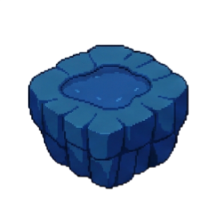
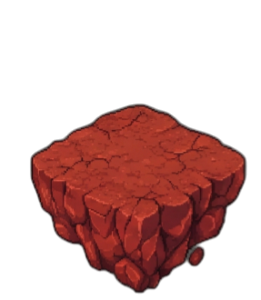
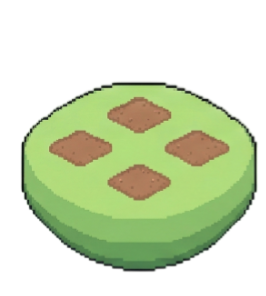
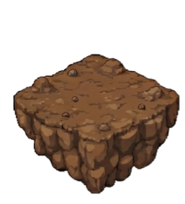

제목
설명
NEXT ❯
기억의 심연을 건너는 중...




❮
----
LOADING
❯
📊
ARCHIVED GROWTH
✕
* 이 달에 수확한 마음의 양분입니다.
📖 OPEN DIARY
✕
DIARY
2024 . 05
Click to flip
GEULSEUP
Prev
Cover
Next
📜 READ MEMORY
?
✕
MAY 2024
THE PERSONA
VOICES OF VIRTUES
RETURN TO GARDEN
IN PROGRESS
이 달의 기억은
아직 엮어지는 중입니다.
월간 리포트는 다음 달이 시작될 때
정원사가 정성껏 작성해 드립니다.
지금 만들기
확인